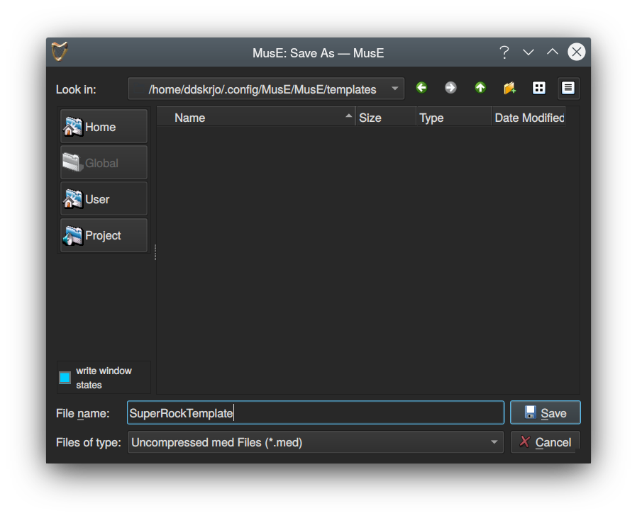
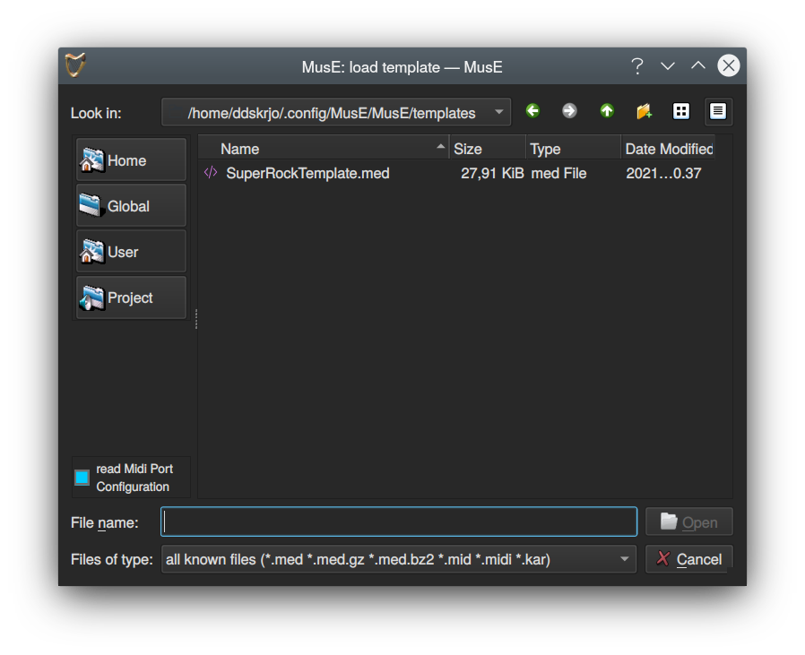

Projects
Proyectos
Los proyectos MusE constan de un archivo .med y un número cualquiera de archivos de audio, si se utiliza audio grabado. Como se señaló en el tutorial de inicio rápido, se recomienda marcar la la opción crear subcarpeta de proyecto (Create project subfolder) si su proyecto grabará archivos de audio.
Tenga en cuenta que esto es para los archivos de audio que crea MusE; si tiene archivos de audio externos que se importan a MusE, no importa a este respecto, ya que MusE hará referencia a la ubicación original del archivo. Sin embargo, para hacer que su proyecto sea portátil y más fácil de realizar una copia de seguridad, es una buena idea colocar también los archivos .wav importados en la carpeta del proyecto, antes de importarlos.
MusE creará proyectos en la carpeta de proyectos globales, que inicialmente es $HOME/MusE. Será creado si no existe. Por ejemplo, si se crea un proyecto llamado GreatSong con la opción de subcarpeta marcada, la ruta al archivo .med será $HOME/MusE/GreatSong/GreatSong.med. Además, cualquier archivo de audio que cree MusE se colocará en la carpeta $HOME/MusE/GreatSong.
La carpeta global del proyecto se puede cambiar desde el cuadro de diálogo Nuevo proyecto (New project).
Plantillas
Una vez que haya comenzado a tener una comprensión más profunda de cómo prefiere trabajar con MusE, es posible que descubra que existen ciertos parámetros de configuración que siempre desea tener. Por ejemplo, que siempre cree pistas de entrada para todas sus entradas físicas en su tarjeta de sonido, o tal vez cree algunas instancias de sus sintetizadores de software favoritos que usa a menudo. Esto se puede lograr en MusE creando plantillas.
Plantillas de inicio
MusE siempre usa plantillas. De forma predeterminada, cuando se inicia MusE, se carga una plantilla llamada default.med. Esta plantilla contiene solo una pista de salida que debe conectarse a la tarjeta de sonido, si existe una tarjeta de sonido.
En el cuadro de diálogo Configuración ➜ Configuración Global (Settings ➜ Global Settings) en la pestaña Aplicación (Application), la plantilla de inicio se puede cambiar a cualquier plantilla que exista en su sistema.
Creando plantillas
Para crear una plantilla para un caso de uso específico, simplemente configure las cosas que desea tener preconfiguradas en sus proyectos como lo haría normalmente al hacer una canción, y justo antes de comenzar a crear música, seleccione Archivo➜ Guardar como plantilla (File➜Save As Template), dé a la plantilla un nombre de archivo descriptivo y guárdelo en la carpeta seleccionada.

Nota: No está en contra de las reglas agregar música a una plantilla, por supuesto. Hágalo si tiene un caso de uso específico, pero para la mayoría de las veces no será necesario.
Usando plantillas
La opción Archivo ➜ Nuevo desde plantilla… (File ➜ New from Template… ) mostrará una lista de plantillas disponibles. De forma predeterminada, el cuadro de diálogo mostrará plantillas de la vista Global, que son algunas plantillas incluidas con MusE como ejemplos. Al hacer clic en el botón Usuario (User), se mostrará la plantilla que se acaba de crear. Use templates
